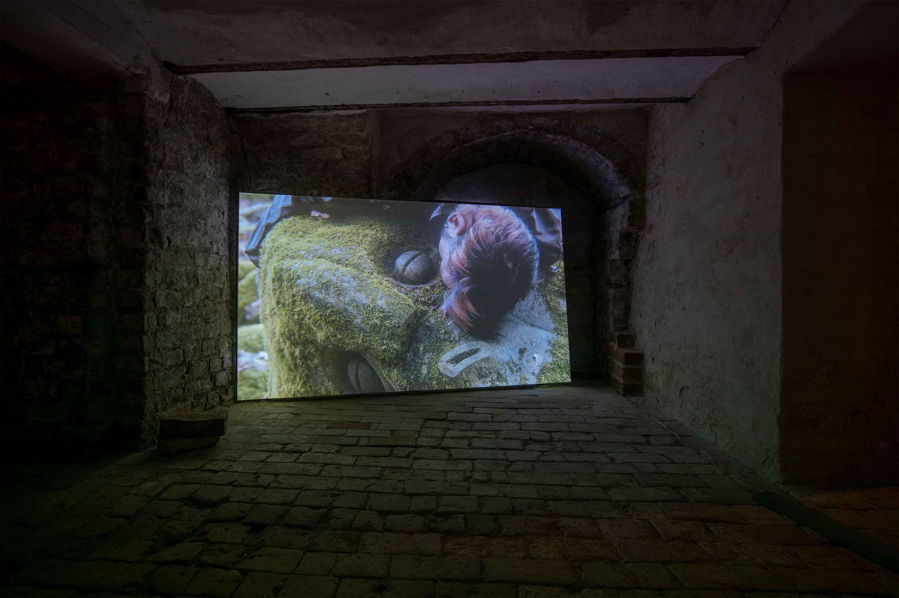
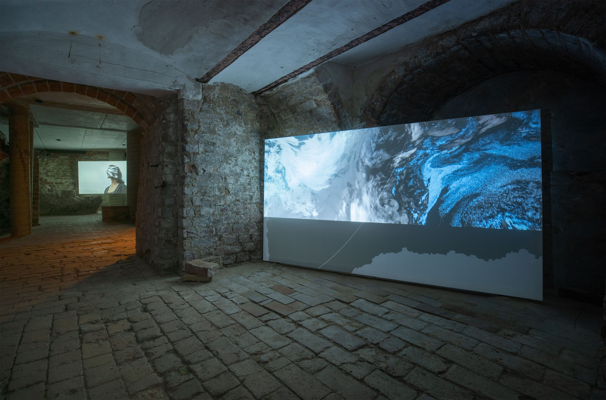
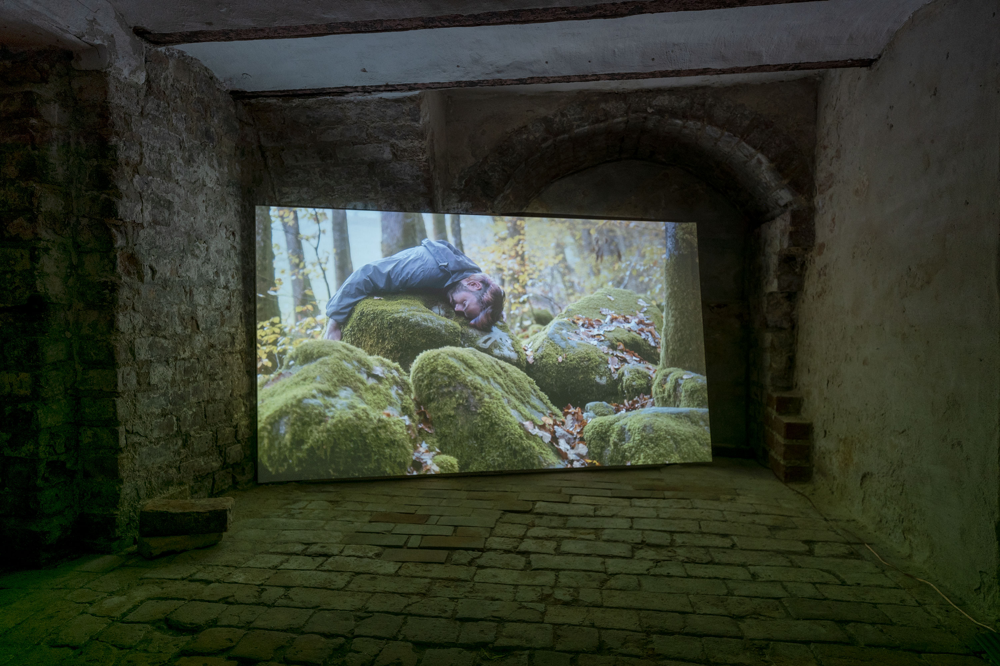
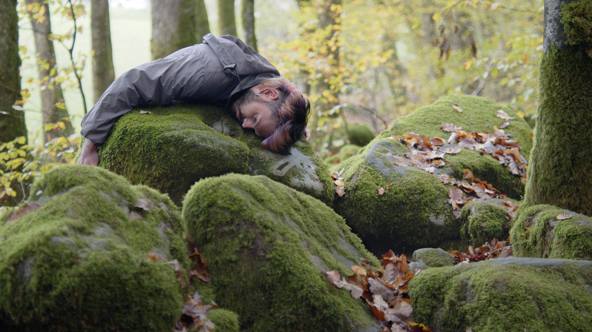

Jessica Arseneau



Demain, peut-être, vues d'exposition, Galerie Historischer Keller, Berlin


Images fixes tirées de la vidéo
Maybe It's Tomorrow, 2023
Vidéo HD, son stéreo
7:45 min.
Performeur : Aurélien Finance
Sculpteur : Philippe Leonard
Assistante de projet : Laura Haby
Caméra : Jessica Arseneau, Laura Haby
Montage visuel/sonore/étalonage : Jessica Arseneau
Dans la vidéo Maybe It's Tomorrow, 2023, la caméra survole une pierre sculptée en forme de visage humain, qui donne l'impression d'être endormie au cœur d'une forêt en automne. La formation d'une roche datant d'ères géologiques lointaines, cette pierre pourrait être endormie depuis plusieurs milliers d'années ou fatiguée en permanence, la mousse poussant au creux des cernes sous ses yeux. Une figure humaine est allongée sur la pierre dans une immobilité qui rappelle l'épuisement véhiculé par la posture de la pierre sculptée.
Des plans de la forêt alternent avec des images de la Terre qui défilent sur l'écran le long de la zone crépusculaire, nous permettant de voir à la fois le jour et la nuit, l'aube et le crépuscule. Elles capturent des villes illuminées en permanence, montrant des lieux comme des sites presque toujours éclairés et lumineux. Cependant, certains lieux ne sont pas éclairés la nuit, comme les lieux en situation de crise et des zones qui pourraient sembler intactes. Ces images nous montrent également la permanence d'images satellite capturée en orbite jusqu'à ce que l'image aboutisse dans une zone sans données.
Remerciements : Marie Paule Bilger, Jean-Jacques Delattre, Emmanuel Henninger, Jeremy Ledda, Florent Rusch, KM0, La Ferme Aventure, Motoco, Kunsthalle Mulhouse, Goethe-Institut Strasbourg
Ce projet a été créé durant la résidence de création ALLEZ & ZURÜCK du Goethe-Institute Strasbourg, en collaboration avec la Kunsthalle Mulhouse, Motoco, Goethe-Institut Nancy, le Bureau des arts plastiques et supporté par OFAJ DFJW, DRAC Grand Est et Centre Français de Berlin. Ce projet bénificie du support de ArtsNB.
Ce projet est soutenu par le Conseil des arts du Nouveau-Brunswick